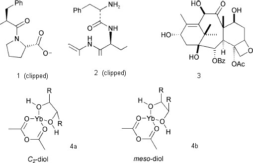

Figure 6. A complex reaction schematic, illustrating the degree of (human) perception required.
Figure 7. A typical experimental section, illustrating the relatively structured nature of the data descriptions.
aUnilever Centre for Molecular Informatics, Department of Chemistry, University of Cambridge, Lensfield Road, Cambridge. CB2 1EW. bDepartment of Chemistry, Imperial College, London, SW7 2AY, England.
We present an overview of the current state of public semantic chemistry and propose new approaches at a strategic and a detailed level. We show by example how a model for a chemical semantic web can be constructed using machine-processed data and information from journal articles.
The last ten years of the Internet as a medium for information exchange have created huge expectations in the general public. People look to the Web as their first (and often only) source of information and increasingly expect it to be delivered automatically. Novel forms abound, such as wireless technology, smart clothes and personal (music) devices. Many communities (media, finance, music, government) are making rapid advances in conveying instant services or information. One coherent vision of this new environment is epitomised by Berners-Lee's "Semantic Web" (SW)1 where knowledge is instantly available and computers as well as humans can reason from it to make decisions.
The ethos of the Semantic Web is well summed up by two quotations from J. D. Bernal, made almost 40 years ago2;
"However large an array of facts, however rapidly they accumulate, it is possible to keep them in order and to extract from time to time digests containing the most generally significant information, while indicating how to find those items of specialized interest. To do so, however, requires the will and the means"
"[we need to] get the best information in the minimum quantity in the shortest time, from the people who are producing the information to the people who want it, whether they know they want it or not" (our emphasis).
Meanwhile the power of computation (speed, memory, bandwidth and software) continues to increase at Moore's-law speed. An impressive chemical use of the Internet and high-throughput computing was demonstrated by Richards and co-workers3. To quote from their site
Anyone, anywhere with access to a personal computer, could help find a cure for cancer by giving "screensaver time" from their computers to the world's largest ever computational project, which will screen 3.5 billion molecules for cancer-fighting potential [...] over 2.6 million computers have joined the project with over 320,000 years of CPU power used ... Through a process called "virtual screening", special analysis software will identify molecules that interact with these proteins ... The process is similar to finding the right key to open a special lock - by looking at millions upon millions of molecular keys.
At a recent meeting,4 Richards in his presentation of this project made a request to the chemical community to collaborate in utilising this immense computer power, which "for the first time in my scientific career is more than we alone can make use of." This particular project illustrates the concept of the Grid, a linking of vast computational power for immediate use. In science this is anticipated by the construction of the Global Grid (and nationally in the UK, the eScience project) where instant access to trusted information and services is possible. The combination of the Grid and the Semantic Web is seen as culminating in a Semantic Grid, in which vast power and knowledge are combined.
Much classical chemical knowledge has in turn been built on what is described as "data mining". For example, all chemists are familiar with the concepts introduced by the likes of Mendeleev, Trouton, Barton (Conformational analysis), Woodward (Pericyclic reactions) etc. At the time of these discoveries, the scientific literature was sufficiently small and these concepts were sufficiently focused that any necessary supporting data could be feasibly extracted from the literature by human labour alone. In 1973 Burgi and Dunitz5 showed that the measured geometries of a range of similar compounds could map a reaction pathway, such as N...C=O addition. With the technology and access to data available at the time, it could typically take several months to extract sufficient information for a single system. In 1976 this process was revolutionised by introduction of crystallographic data files, which made coordinates available to the scientific community. This led to the possibility of automatically computing and mining many hundreds of geometries in a few minutes and which speeded such studies by several orders of magnitude. Using this technology it proved possible to show6 that the intermolecular interactions involving O...I-C substructures were directional; this relied on computation of many crystal lattices and searching the substructures. There are now around 1000 articles describing the use of the crystallographic data file for primary scientific research.
One further example serves to illustrate how the availability of appropriate data has influenced development of new techniques. Thus parametric semi-empirical quantum mechanical methods rely on a well-distributed set of molecules and data. The development of early semi-empirical MO parameterisations in the 1970's was based on (manual and laborious)7 acquisition of data for at most 10-20 molecules per element parametrised. Nowadays8 such parametrisations are conducted using datasets for 1500 or more molecules, and the bottleneck is now more likely to be the validation and checking for self consistency and validity of the data used.
However, these various projects are not general or easily copied. The Cancer project4 for example had to provide most of its infrastructure and is based on uniformity of data (proteins/ligands) and (proprietary) software. The chemical community needs to be able to operate on a wide range of problems without having to engineer each of them separately; in effect there is a need to incorporate semantics and ontologies into a generic set of tools for this purpose. Here we suggest that the Semantic Web can provide such an infrastructure.
The domain-independent infrastructure of the semantic web is becoming omnipresent through de facto standards (mainly from W3C9) such as XML (eXtensible Markup language), RDF (Resource description framework) for relationships, RSS (Rich-site Summary) and Dublin Core for metadata-based newsfeeds, OWL for ontologies and BPEL4WS for workflow and web services. It will shortly be possible to request a machine to discover existing knowledge or services and make appropriate transactions to obtain these, including security, trust, and metadata in a robust and efficient fashion. Its adoption will depend on "what there is to discover" and how valuable it is. We have variously argued10 that chemistry is an almost ideal discipline for transition to such a next generation of informatics infrastructure; a Chemical Semantic Web. This in turn would be supported by domain-specific de facto standards such as the CML (Chemical Markup Language) family11,12.
In this article we argue that primary publications in this and similar journals should form a major substrate for such a chemical semantic web. When rendered machine-understandable, in the form of what we have termed datuments13, journals will form the future knowledge base for the discipline. For simplicity we shall restrict ourselves in this article to small organic molecules, their properties and reactions. However the philosophy extends directly to computational, structural, thermo-, analytical and much inorganic and physical chemistry. The technology exists; it is up to the community to support the vision.
The Semantic Web and the emergence of Grid computing involve a qualitative change not only in the way that we manage information but in the way that science is carried out. We see computers becoming an integral part of the scientific process in many ways, in helping to;
Establish data quality. Scientific information can be corrupted during the publication process. Thus Stewart8 has shown that in a comparison of calculated and observed thermodynamic data at NIST, many of the discrepancies were due to publication or transcription errors. Using the OSCAR publication checker14 (which analyses data for self-consistency and acceptable ranges) it has been shown that a very high proportion of articles in synthetic organic chemistry contain at least one dubious data value. We note however that much of the (explicit or implicit) data in the current publication processes are created and maintained on or by machines. If the protocols are well agreed, then the data are implicitly machine-understandable. When machine-referees are used for data they have made valuable contributions. This is particularly true in areas such as crystallography, where crystallographic structures are routinely reviewed by programs which encapsulate more expertise than most humans, and e.g. thermophysical property databases15 where management of data quality can be enforced. The biosciences are also used to running automatic processes over data of imperfect quality. For example many of the ligands in the Protein DataBank have fuzzy structures (imperfect coordinates, unknown charge, unlocated hydrogen atoms, etc.) Yet it is felt highly valuable to create resources derived from these such as PDBSum, HIC-UP, LigPlot and many others. These authors certainly wish access to as much data as possible and will use their judgments and robots to decide on how to process it.
In this article we encourage chemists to develop a shared vision whereby information is communal and accessible. It is important to realise that all information is potentially valuable and that the producers may not realise at the time what their descendants will require. We argue that the technologies and protocols presented here can be implemented at marginal cost within the publication process, if the community desires. This approach is not novel in other domains.
It is a truism that the Web develops in unpredictable ways, but we believe that the success of Google and related search engines suggest that client-based discovery is likely to be a key component. In principle a "chemical Google" could be extremely effective and completely change the basis of chemical information management; in practice there are substantial cultural and technical barriers. We explore these in this article and urge all chemists (authors, editors, readers, examiners, funders, businesses and agencies) to consider how a change in practice could lead to much greater use and re-use of chemical information.
Chemical information as based on molecules and compounds is the cornerstone of the Chemical Semantic web. Friedlich Beilstein19 created a revolution in scientific informatics by introducing the data model of Compound-Properties-Source as far back as the 1860s! Effectively this concept still remains relevant today and is the basis of a multimillion informatics market, with near comprehensive abstraction of all new compounds and their properties from the primary literature. Whilst various modern aspects of chemistry extend this simple concept to the limit, especially those where the bonding is debatable or the chemistry is novel, "most" organic chemical structures are very well defined. For example it is possible to specify these in patents and have rigorous procedures for determining equivalences. The crystalline state is also well characterised for many applications and the International Unions (IUPAC, IUPAB and IUCr) have important ongoing projects to systematise chemical representation. XML9 has become recognised as an essential specification for markup languages. Chemical Markup Language (CML)11,12 itself was specifically developed as XML-conforming language to support the communality of agreement within the community and to allow divergence of representation when it is essential. In broad terms, the CML design allows support for molecules and their properties and is becoming adopted by a wide range of organisations (Patents, publishers, government agencies and software manufacturers). The fundamental architecture of CML contains no molecular concepts that are not in current use, and we showed some time ago that it is possible to publish complete journal articles using various XML components such as CML.20 Other examples of XML-languages being used in this manner include MathML and ThermoML,21 the latter developed by NIST (National Institutes of Standards and Technology) as part of their role in measuring and aggregating data for compounds. Most information however is still micro-published and has to be tediously (and expensively) extracted by humans. In contrast, the biosciences have developed an open model where much publication is directly to the public electronic domain, there being no distinction between the data in a published article and its representation in an international database such as SwissProt or the Protein Databank. Indeed the latter may be of more value, as the data can be annotated at intervals, whilst the original publication is "inviolate" but often dated.
The current generation of Semantic Web tools require access to information and services with effectively no barrier. If a machine wishes to retrieve a unit of information, it cannot at present login to a protected web site (even without cost), make (micro) payments, or verify that it is not violating copyright or other intellectual property rights. Semantic Web applications can therefore only currently be built upon publicly accessible Web resources. It seems appropriate therefore to raise at this stage the issue of what is termed Open Access (OA), purely here in the context of the Chemical Semantic Web. The OA model is epitomised by the Budapest Open Access Initiative22, which includes the following definitions:
By "open access" to this literature, we mean its free availability on the public internet, permitting any users to read, download, copy, distribute, print, search, or link to the full texts of these articles, crawl them for indexing, pass them as data to software, or use them for any other lawful purpose, without financial, legal, or technical barriers other than those inseparable from gaining access to the internet itself. The only constraint on reproduction and distribution, and the only role for copyright in this domain, should be to give authors control over the integrity of their work and the right to be properly acknowledged and cited.
The OA model is supported by funders such as the Wellcome Trust23, which
[...] therefore supports open and unrestricted access to the published output of research, including the open access model as a fundamental part of its charitable mission and a public benefit to be encouraged wherever possible.
and organisations such as NIST, who are promoting OA models of efficient data re-use (using XML technology) between themselves, major journals and industry.24
At present the primary chemical literature is not openly accessible on the Internet. There are currently 33 chemistry journals cited by the Directory of Open Access Journals25 as Open Access, and none of them are currently major publishers (e.g. from G8 nations). In a dissenting opinion, the American Chemical Society has argued26 that:
The open-access movement's demand that an entirely new and unproven model for STM publishing be adopted is not in the best interests of science.
Many chemistry publishers also currently prohibit the public self-archiving27 of "fulltext", preprints or postprints. Very recently however, the Royal Society of Chemistry (publisher of this journal) announced28 an official "Green" policy on author self-archiving of articles published in RSC journals. In this spirit, this article has itself been self-archived on the authors' own institutional archives.29
We restrict ourselves here to a plea that all primary chemical data be made openly available at time of publication. We emphasize "data" since "facts" are not copyrightable under the Berne convention, and primary publishers have little incentive or success in publishing the complete data associated with an article. In fact the current publication process is a dis-incentive to publishing experimental data. It is also notable that most supplemental data is not in re-usable form (often being found as Word or PDF files or as scanned images). In the case of crystallographic data it is often only available from the (non-open) Cambridge Crystallographic Data Centre. This results in further restrictions on access and re-use.
We therefore argue for publication by the author of data under Open Access protocols to a public or institutional repository. We appreciate that this change will take time, and involves investment in technology. It is, however, not novel, being a requirement in the biosciences for protein and nucleic acid sequences and structures and is common in many other areas. Whatever policy is adopted by publishers, it is essential that it is made clear to both human and robot readers and re-users what may be done with published articles. We therefore list below a series of issues for resolution and clarification.
I [*] assume US law governs throughout; an inaccurate but necessary assumption here. If you extract only the actual coordinate data you have no copyright liability. One cannot copyright facts, only the expression incident to factual reporting. This principle was recognized by the US Supreme Court in 1915 with respect to news reports sent by telegraph. The idea/expression distinction has been held by the Supreme Court to prevent assertion of copyright over telephone white pages, where there is no originality in the concept of alphabetic organization of data. More complex forms of association or organization of data might give rise to claims.
By analogy, properties such as melting points, spectra, refractive indexes, and similar measurements are also facts. We therefore assume that by default humans can abstract and repurpose factual information (generally referred to as "data" in this article) without seeking copyright permission. We believe that this is current practice among many secondary data producers. We see no logical reason why robots cannot perform the same task. By default, therefore, if the owner/controller of a robot has access to one or more publications, their robots can extract the facts from these publications and re-use the collected information freely. We ask that publishers confirm that no copyright is violated in the extraction and reuse of factual information by robotic methods where the user has legitimate access to the information.
Re-use of supplemental data. We show below that, at least for crystallography, the re-use of supplemental data is highly valuable, but the access to and copyright status of it varies from journal to journal. We would assert that it consisted of facts, but for many journals, the same copyright notice that applies to the primary article also by default covers the supplemental information. Whilst the experience of the present authors (HSR) suggests that requests to publishers for a more open non-exclusive copyright status for supplemental data are often granted, we suspect this is not common. We believe that the motivation behind the deposition of supplemental data is to make it available to the community for re-use, but that many authors do not realise the concerns of copyright. We ask that publishers confirm that their supplemental data, whether held by them or by a third party is freely reusable by humans and robots.
We hope to collect the views of major publishers of chemistry on these questions. We appreciate the effort required to addressing these concerns but feel that solutions are essential if there is to be a thriving Open chemical information process, on which applications such as the semantic Web can be built.
In the second part of this article, we will proceed to show that our vision is realisable with today's technology and take as example the high-throughput computation of the properties of molecules published in the present journal (Organic and Biological Chemistry). Our general approach takes the form shown in Figure 1.
Figure 1. Schematic for Capturing and processing data
from journal articles.
In most cases the "legacy" input can be converted automatically to CML and input to the computational process. The results can be repurposed in several ways, including storage in an XML repository. If the authoring process is converted to using XML, then the whole chain can be seamless. A typical XML-based process in shown in Figure 2. This will then allow the complete material in a primary publications to be used as a global knowledge base.
Figure 2.. Workflow schematic for XML-based
data-processing for the journal article.
Before describing how content can be transferred from the "pages" of current journals into a semantically rich environment, it is worth considering how such semantics are currently represented in journal form. We focus on organic chemistry, which still rests securely on many of the concepts developed in the nineteenth century. In our XML-based formalism of chemistry12, many of the core concepts (e.g. atoms, bonds, electrons etc) would have been understood by an early 20th century chemist. The representation of more complete chemical entities, substances, and reactions has however also remained substantially unchanged. In particular chemists have learnt to communicate many concepts graphically, and until around 20 years ago these were necessarily restricted to the printed page.
In 1984 the introduction of e.g. the ChemDraw program provided arguably the first widely available mechanism for transfer of chemical ideas between computer and the printed page in a graphical form; concurrently, physical and theoretical chemists were starting to use programs such as LaTeX for handling equations. The key point is that these "electronic chemical stencils" did not change, and in fact reinforced, conventional (and often ambiguous) symbolism. In some cases the programs were designed to display excellently on paper, only adequately on the screen and much less so within formal data-structures. The creators of such programs often constrain the chemical author to a finite set of chemical glyphs with the consequence that semiotic innovation is thereby not encouraged.
Tools for the display of three-dimensional chemical objects have created enhanced chemiotics such as the Connolly surface, and the rendering of quantum mechanical concepts ("orbital photography"), which thereby became more accessible to chemists. But molecular structure and reactivity has largely remained rooted at the "arrow-pushing" level. Determination of the electron counts and configurations in a molecule often requires significant work, accompanied by the perception of many implicit semantics
Overall therefore, we conclude that almost all current chemiotics is "fuzzy", it requires considerable experience to interpret it and an induction into the priesthood. There are frequent misunderstandings, often only resolvable by a deep knowledge of the chemistry of substances and reactions. It is "known" that in many structures hydrogen atoms are to be added, and in others not. For steroids the stereochemistry at centres is deducible "by analogy". Reactants are frequently inferred from textual annotations such as "aqueous workup". Carbon atoms are/not assumed where "bonds cross". These implicit semantics are difficult, dangerous and impossible for machines to understand. The discussion that follows illustrates how some of these difficult issues arise and where they can be addressed.
We have chosen to illustrate the potential for the Chemical Semantic Web by analysing the current articles in this journal (June 2004). We show the potential for machine analysis, although here have deliberately carried it out manually as the RSC journals site restricts web trawling to Google (see editorial comment associated with this article). In principle, everything reported here would be scalable with robots. We have also tried to emulate the Web access of a non-subscriber (i.e. emulating what is available Openly). This also attempts to ensure that we do not abuse our subscription access.
For the OBC journal, (Graphical) abstracts of all articles, 3-4 free articles per issue and Supplemental data for a proportion of the articles is publicly available. We confine ourselves to articles reporting compounds (new or re-used) and their properties or reactions, addressing the perspectives of Human understandability and implicit semantics, the machine understandability of data in articles and the machine understandability of supplemental data. Our corpus is therefore comprises two openly readable articles33,34 and 24 (closed) advance articles, with graphical abstracts and optionally supplemental data. We have taken, as they appear, the first two articles together with one graphical abstract and supplemental data from several others. Authors and editors should not take this as specific criticism but simply as a sample of the current state of the art of graphical representation.
The first article33 is a review of chemical reactivity in a synthetic context. It does not report details of individual molecules and the chemistry is almost entirely graphically based, so the article has no chemical machine-understandability. Some issues arising from this are shown by a typical snapshot (Figure 3).
Figure 3. Two illustrative reaction sequences taken
from ref 33.
These reactions have almost certainly been authored using a computer, but are aimed for human, not machine understandability. Their layout is dictated not by chemical practice but the requirement to use two columns in a width-limited display constrained by journal paper sizes. Assuming the 2D coordinates of the graphics primitives were available in machine-readable form, a machine could, with sufficient heuristics, understand the content of the left hand frame, but the right-hand one is effectively impossible. The machine must recognise that the species over the arrow is a stoichiometric reagent, that the "+" means "mixture of" and that the text actually represents a two column/two row table. "TEA" and "Alk" are not explicitly defined. It is therefore unrealistic to expect machines to understand published reactions without new approaches (see below).
Machine-readable molecules (i.e. with connection tables) should, however be almost completely tractable. However a consistent approach is critical; significant variability of stereochemical representation within a single article and even within a single molecule can often be observed. Here four different conventions are used33 for the same concept (a hatched "wedge" bond, Figure 4).

Figure 4. Stereochemical notatations taken from ref
26.
In 1 (our numbering), the stereochemistry can only be interpreted if it is assumed that the wide end of the hatched wedge is the chiral atom. In 2 no chiral atom is indicated, the reader needing to know that a carbonyl cannot be stereogenic. In 3 the solid wedged bonds have a different convention from 2 and three different conventions are used for the hatched wedge bonds. One stereo centre is not annotated (presumably the ring junction is assumed to be cis but the reader must know the conformational energetics of small rings.) Another centre is decorated with wedge and hatch bonds even though it is not stereogenic. In 4a and 4b, two stereoisomers are presumably indicated by the positions of bonds rather than a stereochemical convention.
A machine would be incapable of making these judgements. The diagrams have, however, almost certainly been created in a drawing program and can easily be analysed for validity and consistency using the IUPAC/NIST INChI program.32 We show this process being used for molecule 3 . INChi reads a connection table, normalizes it (i.e. for different approaches to aromaticity), detects possible tautomerism and other possible variations and uniquely labels all atoms (Figure 5). It also generates a unique string or XML (shown later) which can be used for indexing or editing and as a machine understandable connection table. The message from this article, therefore, is that if authors use tools to create, validate, and publish their structures, a high degree of machine understandability can be achieved.
| (a) | (b) |
|---|---|
Figure 5. INChI Identifier generated for molecule3, derived from Figure 4, showing (a) the published structure of 3 with unmarked stereochemistry for C-23 and no stereogenicity for C-25 and (b) with presumed "correct" stereochemistry.
The second article34 reports around 20 novel compounds. They are reported in a concise, human-readable but not very human-friendly form (Figures 6 and 7).
Figure 6. A complex reaction schematic, illustrating
the degree of (human) perception required.
Figure 7. A typical experimental section, illustrating
the relatively structured nature of the data descriptions.
Figure 6 contains much information, but it is a considerable effort to read. The reader first has to work out the semantics, which are that a series of related compounds are transformed by a series of reagents to a series of products. None of the identities of the compounds are explicit and have to be deduced by decoding the generic Markush-like substitutions. Note that not all compounds in a series follow the same paths. Only the starting compounds have the complete structural framework; the rest have cutaway diagrams. The reason for this is primarily to save space in the conventional representation. Although not explicit, we assume that the metal in the intermediates is coordinated to all 4 N atoms. Note also that the reagents are not explicitly given, but have to be decoded from the caption, again mandated by the need to save space.
The scheme is not machine-understandable but it is augmented by the running text and analytical data (Figure 7) which are. These were not given in the main text for all numbered compounds, but additional material was provided in the supplemental data. Using the OSCAR program14 the data for the 10 compounds in the text was robotically translated into CML and is shown as a summary (Table 1).
Table 1. Automated parsing of experimental data using the OSCAR program.14| name | id | formula | CNMR | HNMR | IR | MS | Nature | UV | |
|---|---|---|---|---|---|---|---|---|---|
| meso-Diphenylindaphyrin | 10aH2 | C44H27O2N4 | 20 peaks 116.7... |
9 peaks 1.49... |
1 peaks 1699... |
1 peaks 643... |
powder |
5 peaks ... |
|
| [meso-Diphenylindaphyrinato]Ni(II) | 10aNi | C44H24N4NiO2 | 18 peaks 110.7... |
9 peaks 7.375... |
1 peaks 1599... |
||||
| [meso-Diphenylindaphyrinato]Cu(II) | 10aCu | C44H24N4O2Cu | 1 peaks 1709... |
1 peaks 703... |
powder |
8 peaks ... |
|||
| [meso-Diphenylindaphyrinato]ZnII | 10Zn | C44H24N4O2Zn | 17 peaks 125.1... |
6 peaks 7.35... |
1 peaks 1702... |
1 peaks 704... |
black |
6 peaks ... |
|
| meso-Triphenyl-1-formylindaphyrin | 12aH2 | C44H29N4O2 | 25 peaks 112.2... |
15 peaks 1.90... |
2 peaks 1655... |
1 peaks 645... |
6 peaks ... |
||
| [meso-Di(3,4,5-trimethoxyphenyl) -3,4,5-methoxyindaphyrinato]NiII | 10cNi | 7 peaks 4.035... |
2 peaks ... |
||||||
| meso-Di(3,4,5-trimethoxyphenyl) -3,4,5-methoxyindaphyrin | 10cH2 | C56H51N4O14 | 26 peaks 45.5... |
6 peaks 1.44... |
1 peaks 1696... |
1 peaks 1003... |
7 peaks ... |
||
| meso-Ditolyl-4-methylindaphyrin | 10bH2 | C48H35N4O2 C48H32N4NiO2 | 21 peaks 21.2... |
17 peaks 1.43... |
1 peaks 1703... |
1 peaks 699... |
10 peaks ... |
||
| meso-Tritolyl-1-formyl-(4'-methyl)indaphyrin | 12bH2 | C48H37N4O2 | 29 peaks 21.6... |
15 peaks 1.96... |
2 peaks 1711... |
1 peaks 701... |
6 peaks ... |
It is clear that a large amount of high-quality information, including molecular formula and spectral peaks can be understood. Unfortunately no connection tables are given, and the names cannot be interpreted, as the authors have just coined many of them. The publication would again be enormously enhanced by the generation of INChI identifiers32 for all the unique molecules. This process is illustrated below for four of these compounds involved in one of the transformations (reagent v, Figure 6) and believed to be 7bH2, 8BNi, 11 (a generic label?), and 10bNi) These were redrawn by us using a CML-aware editor (Marvin35), saved as MOL files and CML files and the INChI identifiers generated from these (Table 2).
| Table 2. INChI Identifiers generated for selected species described in Figure 6. | |
|---|---|
| 7bH2 | INChI=1.11Beta/C48H40N4O2/c1-27-5-13-31(14-6-27)41-35-21-22-36(49-35)42(32-15-7-28(2)8-16-32)38-24-26-40(51-38)44(34-19-11-30(4)12-20-34)46-48(54)47(53)45(52-46)43(39-25-23-37(41)50-39)33-17-9-29(3)10-18-33/h1-4H3,5-26H,47-48H,50-51H,53-54H/b41-35-,41-37-,42-36-,42-38-,43-39-,44-40-,45-43-,46-44-/t47-,48+ |
| 8bNi | INChI=1.11Beta/C48H37N4O2.Ni/c1-29-5-13-33(14-6-29)45-37-21-22-38(49-37)46(34-15-7-30(2)8-16-34)40-24-26-42(51-40)48(36-19-11-32(4)12-20-36)44(28-54)52-43(27-53)47(41-25-23-39(45)50-41)35-17-9-31(3)10-18-35;/h1-4H3,5-28H,(H-,49,50,51,52,53,54);/q-1;+4/p-1 |
| 11(?11bNi) | INChI=1.11Beta/C48H36N4O2.Ni/c1-25-5-11-29(12-6-25)41-35-17-18-36(49-35)42(30-13-7-26(2)8-14-30)38-20-22-40(51-38)44-32-16-10-28(4)24-34(32)48(54)46(44)52-45-43(39-21-19-37(41)50-39)31-15-9-27(3)23-33(31)47(45)53;/h1-4H3,5-24H,47-48H,53-54H;/q-2;+4/b41-35-,41-37-,42-36-,42-38-,43-39-,44-40-,52-45-,52-46-; |
| 10bNi | INChI=1.11Beta/C48H34N4O2.Ni/c1-25-5-11-29(12-6-25)41-35-17-18-36(49-35)42(30-13-7-26(2)8-14-30)38-20-22-40(51-38)44-32-16-10-28(4)24-34(32)48(54)46(44)52-45-43(39-21-19-37(41)50-39)31-15-9-27(3)23-33(31)47(45)53;/h1-4H3,5-24H,(H2,49,50,51,52,53,54);/q;+4/p-2 |
We examined 24 advance articles but restricted ourselves to the publicly (and therefore robotically) visible material, which included the graphical abstract, and any supplemental data. All the articles had a graphical abstract, but only 14 had supplemental data. The latter was examined for machine-understandability (i.e. could a machine, given the likely nature of the data, extract a useful amount of material). Disappointingly, most supplemental data is not machine-understandable and a lot is not human-readable either, with images reduced below the resolution of the pixel grid. Two examples of this latter phenomenon (Figure 8 and 9) clearly show that the data was originally completely machine-understandable, but that the publication process has destroyed this by rendering on (physical) paper (note the presence of human annotations in both). It is worth emphasizing that not all supplemental data is so emasculated; that associated with e.g. ref 17 could in some ways be considered a superset of the main article, since an (XML-based) transformation of the supplemental information would in fact regenerate the formal article.
Figure 8. NMR spectral data provided as supplemental
information, illustrating the human annotations and lack of
machine readability.
Figure 9. Mass spectral data provided as supplemental
information, illustrating human annotations and lack of machine
readability.
The only usable machine-understandable supplemental data provided within these 24 advance articles is a crystal structure attached as a CIF file to an advance publication36. The molecule of interest is indicated as a raster image in the electronic abstract (Figure 10). This is shown full (Websize) at left and magnified right. Again this was (once) machine-understandable; the loss of information is due to conversion to a gif for web viewing, and adoption of a customary size for graphical abstracts.
Using the CIF provided by the original authors however, we believe that we have robotically extracted both the connection table and the 3D coordinates of a single molecule, using the following processing sequence.
This process is not foolproof as CIFs do not in general report molecular charges, and any disorder may be difficult to interpret. In the current case there are no problems. The CML file was then robotically input to the MOPAC2002 program to invoke a PM5 calculation8 (43 sec, done during the time it takes a human to read the abstract and the first paragraph of the article) to generate optimised gas-phase coordinates which were then subsequently input for GAMESS-US39 ab initio re-optimisation. The result was used to generate an INChI identifier and then stored, without loss, in an XML repository (already containing around 250,000 other molecules processed using these automated procedures). This process has also provided two useful ring fragments for addition to e.g. a fragment database. All output from these programs was parsed into CML; the resulting molecules are shown in Figure 11.
Finally, all new molecular entries can be added automatically to a CMLRSS newsfeed18 which allows subscribers to this feed to receive up-to-date information about the entry, including any generated 2D/3D coordinates and associated information.
Figure 11. (a) original (experimental) CIF data, (b) a single molecule selected from the experimental data, (c) after optimisation using the MOPAC PM5 method and (d) after optimisation using the GAMESS B3LYP/6-31G(d) method.
The representation of molecules and compounds is relatively standard and primarily needs standardisation and discipline. Chemical reactions, however, are more challenging. There are relatively few tools for authoring chemical reactions, and those are not as widely used as those for molecules, being usually closely bound to non-interoperable proprietary software products. We believe that new approaches for representing chemical reactions are required and that these should move away from "paper-based" approaches. We present here an approach to chemical reactions that we believe should benefit both the human and machine reuse.
Even confining ourselves to ground state species, a single reaction can involve, at many levels of detail:
In addition the term reaction is often used to mean a reaction type (e.g. esterification) where generic groups replace present atomic configurations. or a reaction scheme, whereby a set of reactions is laid out to show an overall synthetic strategy or enzymatic cascade.
We have extended CML to support these concepts ("CMLReact") and tested it on several systems, most notably the MACiE database of enzyme reactions40. The CMLReact scheme includes XML constructions for:
The conventional representation of a reaction with reactants and products may require a complex mapping of identities between them (e.g. atom-atom mapping and electron "movement" (curly arrows)) and CMLReact can support these. However CMLReact can also provide a much simpler approach, now described.
If we discard the need for static paper, and allow the dynamism of the electronic medium, the information presentation becomes dramatically simpler. Atoms (and electrons) remain unaltered during a reaction so there is no need to replicate them. Even if there are several steps and many disjoint fragments (as in an enzyme mechanism) they are always present (even if conceptually at an "infinite distance"). We illustrate this with an example where only one "molecule" is involved - the biosynthesis of the steroid nucleus. The product, reactant and intermediate configurations were sketched with a conventional editor and saved as CML. These were then converted into individual SVG9 documents (Figure 12) and combined using the SVG "animate" feature for the morphing into an animated SVG by processing with the CMLSnap XSLT9 stylesheet.
Figure 12. SVG-format diagrams generated using XML stylesheet transformation from CML. An animated version of this diagram is available via the XHTML version of this article.
The first three steps are stylised conformational rearrangements but the final one involves bond breaking and formation (Figure 12). Instead of using curly arrows, the bonds simply appear, disappear or change order. There are many ways in which this display can be personalised or enhanced. No special tools are required and the authoring time is at least as short as for conventional diagrams and requires no artificially imposed restrictions on layout.
The same approach can be used to simplify the reaction scheme originally discussed and shown in Figure 634. As an example we take the "main horizontal path" which involves the four species: 7bH2->8bNi->11bNi->10bNi. We make "snapshots" of these in the same coordinate frame (Figure 13), again created with a standard editor (Marvin)35. These frames can then be automatically combined into an animation with simple XSLT stylesheets and merged into a single SVG document. SVG provides automatic morphing so the graphic display shows a smooth transition between the species.
Figure 13. Snapshots of a reaction path which can be
transformed to an animated (SVG) presentation available via the
HTML version of this article.
Rather than use curly arrows, we can explicitly include significant electron pairs, as illustrated for a 5-step enzymic reaction40 (Figure 14).
Figure 14. Reaction mechanisms illustrated using SVG,
generated from the corresponding CML.
Reaction procedures will also benefit from being cast into XML. The following proof-of concept cartoon41 (Figure 15) shows the semantics of a chemical reaction procedure captured in XML and displayed by SVG animation. There is therefore great scope for changing the publication process for chemical reactions, but there is a need for standardisation and development of authoring tools.
Figure 15. Proof-of concept cartoon showing the
semantics of a chemical reaction captured in SVG.
We believe the preceeding examples have shown that what advances there have been in the publication process over the last ten years are solely for human benefit; "electronic paper" is of little value to a machine. While much bioscience is published with the knowledge that machines will be expected to understand at least part of it, almost all chemistry is published purely for humans to read. This is compounded by the current business model in chemical information where authors do not deliberately publish information to be machine-understandable. With Chemical Abstracts and Beilstein, the traditional sequence of author⇒primary publisher⇒secondary publisher and the resale of data leads to an expectation that chemists will pay others to curate and collate their information.
This was inevitable until recently, but we argue that now the author is often the best person to evaluate the data produced. Almost all of an author's output (compounds, spectra, reactions, properties, etc.) is nowadays computerised and in principle redistributable to the community for re-use. Few journals actively validate the primary data (e.g. spectra) involved in a publication (chemical crystallography being a clear expectation where data are intensively reviewed by machine). We reassert that chemists must now move towards publishing their collective knowledge in a systematic and easily accessible form for re-use and innovation
The easiest part of this to implement is publication of (new) molecular entities and their associated properties. A molecule reported in this journal requires the statement of its precise chemical identity, the analytical data used to confirm its identity (including spectral information) and the procedure in which it was created or used (as a starting point or intermediate). We urge that authors, funders, editors, publishers and readers move further towards the following protocol:
The actual process of this publication is primarily organisational. An increasing number of Open tools emit CML and will emit other XML schemas. XHTML tols are universal and Open tools for SVG are available. Other Open tools (OpenBabel,45 JUMBO, CDK,38 Joelib46) can convert legacy to and from CML, and support substructure searches. MathML9 is supported by many vendors. Open Office47 supports the general authoring of XML documents. Xindice48 stores native XML documents in a searchable repository. The main challenge is for chemists to recognise the value of making their data machine-understandable, rather than destroying it with traditional paper or slide-focused publication and dissemination processes.
We thank Ms G. L. Holliday for permission to reproduce Figure 14 and Mr. J. A. Townsend for Figure 15, and for the inclusion of the animations in the XHTML version.